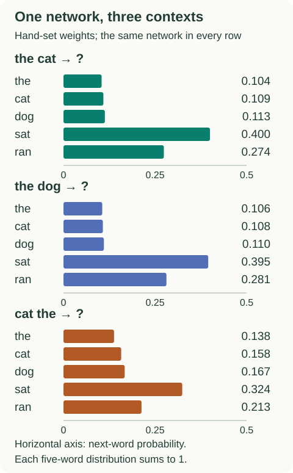

A Neural Probabilistic Language Model
How can a model learn from one word sequence and improve its prediction for another? Work through a tiny network below: every lookup, score, probability and update is inspectable. You need vectors, matrix multiplication and the idea of predicting the next word.
What is shared between contexts?
Imagine learning from “the cat sat” and then seeing “the dog …”. An exact-context count treats the two histories as different keys. A shared vector representation gives a predictor a way to connect them. Whether that connection helps depends on what the vectors and predictor learn.
In the paper's architecture (§2), each context word selects a row of an embedding table $C$. Concatenated vectors enter a tanh hidden layer, then a vocabulary softmax. An optional direct input-to-output connection adds to the scores. Embeddings and network weights train together.
A complete five-word example
Our vocabulary is [the, cat, dog, sat, ran]. Use two context words, two coordinates per word and two hidden units. These are hand-set teaching weights; they were not learned from a corpus. In particular, we deliberately placed “cat” and “dog” close together.
| Word | Coordinate 1 | Coordinate 2 |
|---|---|---|
| the | 0.2 | −0.1 |
| cat | 0.8 | 0.4 |
| dog | 0.7 | 0.5 |
| sat | −0.3 | 0.9 |
| ran | −0.4 | 1.0 |
For “the cat”, keep the positions separate: $x=[0.2,-0.1,0.8,0.4]^\top$. Taking an average would discard this explicit ordering. Here we omit the optional direct connection and set the hidden biases to zero:
The first hidden input is $0.5(0.2)-0.2(-0.1)+0.8(0.8)+0.1(0.4)=0.8$; its activation is $\tanh(0.8)=0.6640$. The second is $\tanh(0.3)=0.2913$. A hidden activation is an intermediate feature, not a probability.
For the “sat” output, choose weights $[1,0.6]$ and bias $0.3$. Its score is $0.6640+0.6(0.2913)+0.3=1.1388$. Softmax compares that score with all five scores:
Subtracting the largest score leaves the probabilities unchanged and avoids unnecessarily large exponentials. The remaining output weights and all intermediate numbers are in the complete parameter file.
Change the words, keep the network

Notice the division of responsibilities. $C(\text{cat})$ is the same lookup wherever “cat” appears. But it occupies different coordinates in $x$ at different positions, and the columns of $H$ treat those positions differently. A shared lookup does not make the predictor insensitive to order.
Follow one learning step back to the table
Suppose the actual next word is “sat”. For negative log-probability, the derivative with respect to score $z_i$ is $p_i-\mathbf{1}[i=\text{sat}]$. It is about $-0.6000$ for “sat” and positive for every other output. Subtracting this gradient pushes the observed word's score upward.
With learning rate 0.2, the “sat” bias alone moves from 0.3 to $0.3-0.2(-0.6000)=0.4200$. A full update also changes $U$, $H$, the hidden biases, and the input rows for “the” and “cat”. Using all gradients from the same pre-update parameters gives:
| Quantity | Before | After |
|---|---|---|
| C(the) | [0.2000, −0.1000] | [0.2193, −0.0976] |
| C(cat) | [0.8000, 0.4000] | [0.8480, 0.4265] |
| C(dog) | [0.7000, 0.5000] | [0.7000, 0.5000] |
| P(sat | the cat) | 0.4000 | 0.4811 |
The unused input rows receive no data gradient in this step; there is no weight decay in our example. Even the input row for “sat” is unchanged: being the target updates its output parameters, which are separate here. Shared network weights can still change predictions for contexts containing “dog”. Improving this training example does not guarantee improved held-out predictions.
Run the dependency-free Python example to reproduce both figures' numbers and the update. It checks every analytic parameter gradient against finite differences and verifies that probabilities sum to one.
python3 blog/ml/recommended-papers/nlp/bengio_toy_model.pyRead the experiment without mixing comparisons
Table 1 reports Brown-corpus perplexity. Below, the neural rows share a model; “mixture” averages its probabilities with a trigram's. Validation selects the configuration; test evaluates it. Lower perplexity is better.
| Model | Validation | Test |
|---|---|---|
| Class-based trigram, 500 classes | 326 | 312 |
| MLP9, neural model alone | 280 | 276 |
| MLP10, neural + trigram mixture | 265 | 252 |
These results support shared representations and complementary predictors on this benchmark. They do not establish long-context reasoning. The fixed input window and vocabulary-wide output computation remain limitations (§§2–3). See the full table and configuration definitions.
For a small numerical check on the metric, suppose a model assigns the observed tokens probabilities 0.5 and 0.25. Its perplexity is $\exp[-(\log 0.5+\log 0.25)/2]=\sqrt{8}\approx2.83$. This summarizes assigned probability, not the fraction of top guesses that were correct. Compare it only under a consistent evaluation vocabulary and tokenization.
What to carry into the next paper
Keep track of three different objects: a word's lookup vector, the context-dependent hidden activation, and the distribution over next words. When you move to sequence-to-sequence models, ask what replaces the fixed context. For a contrasting embedding objective, explore the worked Word2Vec lesson.